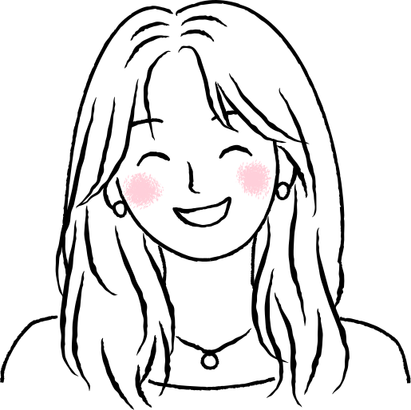

hello,
my name is
serena nam
cs + integrated design & media + math @ nyu




Incoming Software Engineer Intern
Server Engineer Intern
Developed a Slack app that implements real-time Slack interactions to update Jira tickets automatically, automating approval workflows and accelerating product development
Software Engineer Intern
Developed the main user-facing dashboard page for the Code Quest Academy platform, improving user experience with advanced tracking, searching and filter functionalities.
Graphic Design & Marketing Coordinator
Collaborate across eBoard to plan and promote professional and social events, leading end-to-end marketing efforts including flyer design, Instagram promotion, and on-site photo and video coverage to increase event visibility and engagement.
CS-UY 2124 Object Oriented Programming Teaching Assistant
Lead weekly office hours, recitations reviewing course material, and grading programming assignments based on code efficiency, readability, and documentation.
Web Publishing Student Consultant
Advised clients on technical solutions for NYU’s web publishing platform and led plugin testing and documentation during a university-wide CMS migration, ensuring seamless user experience across platforms by comparing feature parity, UI consistency, and accessibility compliance.
Technical Research Assistant
Developed a soft robotic rehabilitation prototype by automating air pump and suction mechanisms to simulate human arm and finger movements,
optimizing actuation timing and pressure control.
Earned 2nd place at the 2024 NYU Tandon Research of Excellence Exhibition with $2,000 in additional funding.
Hi I’m Serena Nam, a third-year student at NYU Tandon majoring in Computer Science with minors in Integrated Design & Media and Mathematics. I've had a broad range of experiences from full-stack development to soft robotics, and I always enjoy learning new things. I’m passionate about developing tools that automate workflows and optimize internal systems, and I'm interested in exploring how AI can enhance these solutions. In my free time, I enjoy film photography (IG: @snippetsbyser) and trying new bites around the city (beli: @ser2na ) !